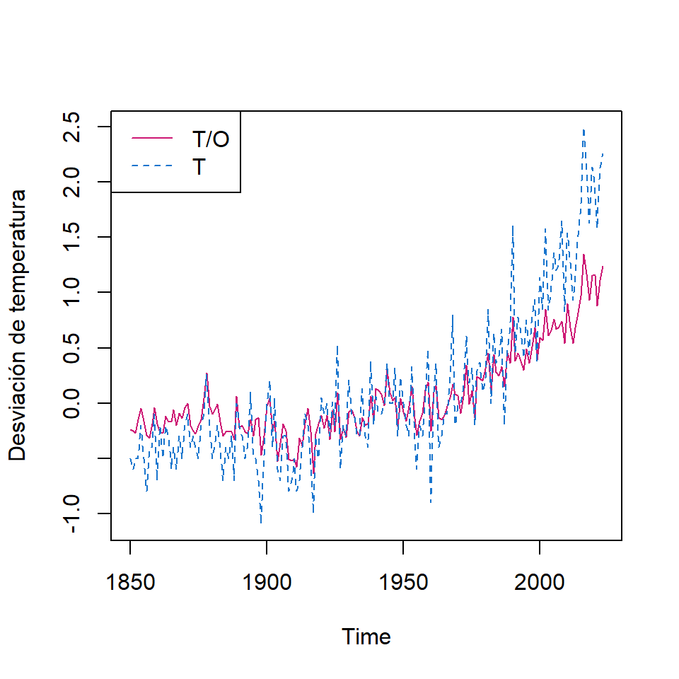

![]()

Tema 3: Modelos de Espacio-Estado(1)
Introducción
Contenido
Introducción
Los Modelos Lineales Gaussianos
Representación en espacio de estados de ARIMA
Filtro de Kalman
Algunas estructuras del modelo
Estimaciones de máxima verosimilitud
Extensiones de los modelos de espacios de estados
Introducción
Propuesto inicialmente por Kalman (1960) y Kalman (1961).
Al inicio, el objetivo del modelo fue en el contexto de estudiar la posición o el estado \(x_t\) de una nave espacial por medio de una ecuación de estado, y una variable observada \(y_t\) relacionada al estado de la nave.
Es una clase de modelos muy amplia que incluye diferentes modelos estudiados (ARIMA, modelos de descomposición, etc.).
Enfocamos en los Modelos de Espacio de Estados Lineales Gaussianos o Modelos Lineales Dinámicos (DLM).
Los Modelos Lineales Gaussianos
Contenido
Introducción
Los Modelos Lineales Gaussianos
Representación en espacio de estados de ARIMA
Filtro de Kalman
Algunas estructuras del modelo
Estimaciones de máxima verosimilitud
Extensiones de los modelos de espacios de estados
Los Modelos Lineales Gaussianos
- El modelo de Espacio de Estados en general está caracterizado por dos procesos en el tiempo:
Un proceso latente (o oculto) \(x_t\): Se supone que es un proceso de Markov, i.e. \[P(x_t|x_{t-1},x_{t-2},...)=P(x_t|x_{t-1})\]
Un proceso de observaciones \(y_t\): Se supone que son independientes dado los estados \(x_t\).
Fuente: Shumway & Stoffer (2017)
El modelo de espacio de estados lineal Gaussiano está definido por:
1- La ecuación de estados: \(~~~~~~~~~~~~~x_{t}=\Phi x_{t-1} + w_{t},\)
donde las variables de estado \(x_t\) son vectores \(p \times 1\) autoregresivos de orden 1,
\(w_t\) es un vector \(p\times 1\) tal que \(w_t \overset{iid}{\sim} N_p(0,Q)\). Suponga que \(x_0 \sim N_p(\mu_0,\Sigma_0)\).
2- La ecuación de observaciones: \(~~~~y_{t}=A_t x_{t} + v_{t},\)
donde \(A_t\) es una matriz \(q\times q\) (matriz de observación o medición), \(y_t\) es un vector \(q \times 1\) con \(q \leq p\). \(v_t\) es ruido \(q\times 1\) tal que \(v_t \overset{iid}{\sim} N_q(0,R)\).
- Suponga adicionalmente que \(w_t\) y \(v_t\) son no correlacionados.
Ejemplo de motivación
Dos series temporales de temperaturas globales de 1880 a 2015.
- T/O: Índice de temperatura global (terrestre y oceano)
- T: el índice de temperatura global (terrestre)
Estas dos series muestran mediciones climáticas de un proceso de estado, que es la temperatura “real” de la tierra.
- Por lo que podemos definir la ecuación de observaciones:
\[\begin{bmatrix}Y_{1,t}\\ Y_{2,t} \end{bmatrix} = \begin{bmatrix}1\\ 1 \end{bmatrix} X_{t} + \begin{bmatrix}v_{1,t}\\ v_{2,t} \end{bmatrix}\]
donde \(v_t \overset{iid}{\sim} N_2(0,R)\) con “alguna correlación instantánea” de los ruidos de observación.
\[R=\begin{bmatrix} r_{11} & r_{12}\\ r_{21} & r_{22}\end{bmatrix}\]
- Para la ecuación de estados, se puede considerar un modelo de caminata aleatoria con desvío: \[X_t= \delta + X_{t-1}+w_t\]
Los Modelos Lineales Dinámicos Gaussianos
Note que el modelo anterior se puede incluir variables exógenas: \[\left. \begin{eqnarray} x_{t}&=&\Phi x_{t-1} + \Upsilon u_t + w_{t}, \\ y_{t}&=&A_t x_{t}+ \Gamma u_t + v_{t} \end{eqnarray}\right.\] donde
- \(\Upsilon\) es una matriz con dimensión \(p\times r\),
- \(\Gamma\) es una matriz con dimensión \(q\times r\) y
- \(u_t\) tiene dimensión \(r \times 1\).
- \(\Upsilon\) es una matriz con dimensión \(p\times r\),
El ejemplo anterior especifica que \(\Upsilon=\delta\), \(\Gamma=0\) y \(u_t=1\).
La representación de los modelos de espacio de estados es elegante ya que incluye una variedad de modelos diferentes. Sin embargo, la estimación de los parámetros desconocidos podría tener divergencia si no especifica bien sus valores iniciales.
Representación en espacio de estados de ARIMA
Contenido
Introducción
Los Modelos Lineales Gaussianos
Representación en espacio de estados de ARIMA
Filtro de Kalman
Algunas estructuras del modelo
Estimaciones de máxima verosimilitud
Extensiones de los modelos de espacios de estados
Representación en espacio de estados de ARIMA
- En general, los modelos ARIMA tienen representación en espacio de estados.
Sea \(\left\lbrace Y_t \right\rbrace\) un proceso AR(1) estacionario,
\[Y_t=\phi_1 Y_{t-1}+a_t\] con su representación de un modelo lineal,o \(MA(\infty)\): \[Y_t=\sum_{j=0}^{\infty} \phi_1^j a_{t-j}\]
- Considere la representación de espacio de estados, usando la ecuación de estados: \[X_t=\phi_1 X_{t-1}+w_t, \text{ para } t=1,2,...\] donde \[X_1=Y_1=\sum_{j=0}^{\infty} \phi_1^j a_{1-j}\] y la ecuación de observaciones: \[Y_t=X_t\]
- Note que en este caso, \(A_t=1\), \(v_t=0\).
- Sea \(\left\lbrace Y_t \right\rbrace\) un proceso AR(2) estacionario,
\[Y_t=\phi_1 Y_{t-1}+\phi_2 Y_{t-2}+a_t\]
- Una representación en espacio de estados es:
\[Y_t = \begin{bmatrix} 1 & 0 \end{bmatrix} X_{t}\] \[X_{t}= \begin{bmatrix} Y_{t} \\ \phi_2 Y_{t-1} \end{bmatrix}=\begin{bmatrix} \phi_1 & 1 \\ \phi_2 & 0 \end{bmatrix} X_{t-1}+\begin{bmatrix} a_{t} \\ 0 \end{bmatrix},\]
- Otra representación alternativa:
\[Y_t = \begin{bmatrix} 1 & 0 \end{bmatrix} X_{t}\] \[X^*_{t}= \begin{bmatrix} Y_{t} \\ Y_{t-1} \end{bmatrix}=\begin{bmatrix} \phi_1 & \phi_2 \\ 1 & 0 \end{bmatrix} X^*_{t-1}+\begin{bmatrix} a_{t} \\ 0 \end{bmatrix},\]
- Sea \(\left\lbrace Y_t \right\rbrace\) un proceso MA(1) estacionario e invertible,
\[Y_t= a_t-\theta_1 a_{t-1}\]
- Una representación en espacio de estados es:
\[Y_t = \begin{bmatrix} 1 & -\theta_1 \end{bmatrix} X_{t}\] \[X_{t}= \begin{bmatrix} a_{t} \\ a_{t-1} \end{bmatrix}=\begin{bmatrix} 0 & 0 \\ 1 & 0 \end{bmatrix} X_{t-1}+\begin{bmatrix} a_{t} \\ 0 \end{bmatrix},\]
Filtro de Kalman
Contenido
Introducción
Los Modelos Lineales Gaussianos
Representación en espacio de estados de ARIMA
Filtro de Kalman
Algunas estructuras del modelo
Estimaciones de máxima verosimilitud
Extensiones de los modelos de espacios de estados
Filtro de Kalman
En la práctica, uno de los intereses es estimar el valor de \(X_t\) dado los datos observados \(Y_{1:s}=\left\lbrace Y_1,...,Y_s \right\rbrace\).
La estimación de \(X_t\) se puede clasificar en 3 situaciones:
- Cuando \(s<t\), el problema es llamado pronóstico o predicción.
- Cuando \(s=t\), el problema es llamado filtración.
- Cuando \(s>t\), el problema es llamado suavizamiento.
Denotamos \[X_t^s=E(X_t|Y_{1:s})=E(X_t|Y_{1},...,Y_{s}),\] \[P_{t_1,t_2}^s=E\left[(X_{t_1}-X_{t_1}^s)(X_{t_2}-X_{t_2}^s)'\right], ~~\text{y}\] \[P_{t}^s=E\left[(X_{t}-X_{t}^s)(X_{t}-X_{t}^s)'\right]\]
Propiedad: Para el modelo de espacio de estados especificado anteriormente, con las condiciones iniciales \(X_0^0=\mu_0\) y \(P_0^0=\Sigma_0\), y para \(t=1,...,n\), se tiene que (para predicción) \[\left. \begin{eqnarray} X_t^{t-1}=\Phi X_{t-1}^{t-1}+\Upsilon u_t \\ P_t^{t-1}=\Phi P_{t-1}^{t-1} \Phi'+Q \end{eqnarray}\right.\] y (para filtración)
\[\left. \begin{eqnarray} X_t^{t}&=&X_t^{t-1}+K_t \left( Y_t - A_t X_{t}^{t-1} - \Gamma u_t \right), \\ P_t^{t}&=& \left[ I-K_t A_t \right] P_{t}^{t-1}, \end{eqnarray}\right.\]
donde \(K_t=P_t^{t-1} A_t' \left[ A_t P_t^{t-1} A_t' + R \right]^{-1}\) es llamado la ganancia de kalman.
Si se interesa por la predicción para \(t>n\), se puede obtener recursivamente con las condiciones iniciales \(X_n^n=\mu_n\) y \(P_n^n\).
Como consecuencia, se puede obtener el error de predicción: \[\epsilon_t=Y_t-E(Y_t|Y_{1:t-1})=Y_t-A_t X_t^{t-1}+\Gamma u_t\] y su matriz de variancia-covariancia es dada por \[\Sigma_t:=Var(\epsilon_t)=Var\left[ A_t (X_t-X_t^{t-1})+ v_t \right]=A_t P_t^{t-1}A_t'+ R\] para \(t=1,...,n\).
Suavizamiento de Kalman
Propiedad: Para el modelo de espacio de estados especificado anteriormente, con las condiciones iniciales \(X_0^0=\mu_n\) y \(P_n^n\), y para \(t=n,n-1,...,1\), se tiene que
\[\left. \begin{eqnarray} X_{t-1}^{n}&=&X_{t-1}^{t-1}+J_{t-1} \left( X_{t}^{n}-X_{t}^{t-1} \right), \\ P_{t-1}^{n}&=& P_{t-1}^{t-1}+ J_{t-1} \left( P_{t}^{n} -P_{t}^{t-1} \right)J_{t-1}' \end{eqnarray}\right.\]
donde \(J_{t-1}=P_{t-1}^{t-1} \Phi' \left[ P_{t}^{t-1} \right]^{-1}\).
Ejemplo: Modelo de nivel local
- El modelo de nivel local tiene la siguiente estructura:
\[\left. \begin{eqnarray} \mu_t& = & \mu_{t-1} +w_t \\ Y_t& = & \mu_t +v_t \\ \end{eqnarray}\right.\] donde \(w_t \overset{iid}{\sim}N(0,\sigma_w^2)\) y \(v_t \overset{iid}{\sim}N(0,\sigma_v^2)\) son independientes. Es decir, la ecuación de estados consiste en una caminata aleatoria y la ecuación de observaciones consiste en un componente de tendencia y un ruido.
- Recuerde que anteriormente se definió este modelo para las series de temperatura del ejemplo 2.
- Simulación de una realización con \(n=50\). \[\left. \begin{eqnarray} \mu_t& = & \mu_{t-1} +w_t \\ Y_t& = & \mu_t +v_t \\ \end{eqnarray}\right.\] donde \(w_t \overset{iid}{\sim}N(0,1)\) y \(v_t \overset{iid}{\sim}N(0,1)\)
- Para calcular el filtro de Kalman, se definen las condiciones iniciales: \[\mu_0=1,~ \Sigma_0^2=1,\] \[~ \phi=1,~ Q=1,~ R=1\]
- Recuerde que para predicción, se calcula recursivamente \[\mu_t^{t-1}=X_t^{t-1}=E(X_t|Y_{1:t-1}), t=1,...,n.\]
- Para filtración, se calcula recursivamente \[\mu_t^{t}=X_t^{t}=E(X_t|Y_{1:t}), t=1,...,n.\]
- Para suavizamiento, se calcula recursivamente \[\mu_{t-1}^{n}=X_{t-1}^{n}=E(X_{t-1}|Y_{1:n}), t=n,n-1,...,1.\]
- Como estamos cosiderando un modelo Gaussiano, se puede obtener
Para predicción: \(\mu_t^{t-1}\pm 2 \sqrt{P_t^{t-1}}\)
Para filtración: \(\mu_t^{t}\pm 2 \sqrt{P_t^{t}}\)
Para suavizamiento: \(\mu_t^{n}\pm 2 \sqrt{P_t^{n}}\)
Algunas estructuras del modelo
Contenido
Introducción
Los Modelos Lineales Gaussianos
Representación en espacio de estados de ARIMA
Filtro de Kalman
Algunas estructuras del modelo
Estimaciones de máxima verosimilitud
Extensiones de los modelos de espacios de estados
Algunas estructuras del modelo
- Modelo de tendencia local
\[\left. \begin{eqnarray} Y_t& = & \mu_t & && +\epsilon_t \\ \mu_t & = & \mu_{t-1} &+ & \beta_{t-1} &+\eta_t \\ \beta_{t} &= & & & \beta_{t-1} &+\xi_t \end{eqnarray}\right.\] Su representación de espacio de estados es:
\[Y_t=\begin{bmatrix} 1 & 0 \end{bmatrix} \begin{bmatrix} \mu_{t} \\ \beta_{t} \end{bmatrix}+ \epsilon_t,\] \[\begin{bmatrix} \mu_{t} \\ \beta_{t} \end{bmatrix}=\begin{bmatrix} 1 & 1 \\ 0 & 1 \end{bmatrix} \begin{bmatrix} \mu_{t-1} \\ \beta_{t-1} \end{bmatrix}+\begin{bmatrix} \eta_t \\ \xi_{t} \end{bmatrix},\]
- De manera similar, se puede considerar el componente de estacionalidad: \[Y_t = \mu_t+S_t +\epsilon_t\]
Estimaciones de máxima verosimilitud
Contenido
Introducción
Los Modelos Lineales Gaussianos
Representación en espacio de estados de ARIMA
Filtro de Kalman
Algunas estructuras del modelo
Estimaciones de máxima verosimilitud
Extensiones de los modelos de espacios de estados
Estimaciones de máxima verosimilitud
- La estimación de los parámetros de un modelo de espacio de estados se puede utilizar estimación clásica o Bayesiana.
- Concentramos la estimación de máxima verosimilitud (clásica).
- Considere \(\Theta\) como el vector de los parámetros desconocidos del modelo, i.e. incluyen todos los parámetros de:
- condiciones iniciales, \(\mu_0\) y \(\Sigma_0\)
- Las matrices de transición de las ecuaciones de estados y de observaciones, \(\Phi, A_t\)
- Las matrices de covariancias de los errores \(Q,R\)
- Las matrices de las variables exógenas \(\Upsilon,\Gamma\)
De acuerdo a los cálculos de las innovaciones \(\epsilon_1,...,\epsilon_n\) \[\epsilon_t=Y_t-A_t X_t^{t-1}-\Gamma u_t,\] y las matrices de covariancia \[\Sigma_t=A_t P_t^{t-1}A_t' + R\]
La función de log-verosimilitud (negativa) es dada por \[- \ell_Y (\Theta)=\frac{1}{2} \sum_{t=1}^n \ln|\Sigma_t(\Theta)|+\frac{1}{2} \sum_{t=1}^n \epsilon_t(\Theta)' \Sigma_t(\Theta)^{-1} \epsilon_t(\Theta)\]
Dada la complejidad de dicha función, en la práctica se realiza la minimización utilizando métodos numéricos como Newton-Raphson.
Sin embargo, por la flexibilidad de un modelo de espacio de estados, muchos problemas de optimización (mínimo local o divergencia) pueden ocurrir.
Extensiones de los modelos de espacios de estados
Contenido
Introducción
Los Modelos Lineales Gaussianos
Representación en espacio de estados de ARIMA
Filtro de Kalman
Algunas estructuras del modelo
Estimaciones de máxima verosimilitud
Extensiones de los modelos de espacios de estados
Extensiones de los modelos de espacios de estados
- En la literatura, diversas extensiones han sido estudiadas. Por ejemplo, los coeficientes \(\Phi, \Upsilon, \Gamma\) y las matrices de covariancias de los errores \(Q\) y \(R\) pueden variando en el tiempo, i.e.
\[\left. \begin{eqnarray} x_{t}&=&\Phi_t x_{t-1} + \Upsilon_t u_t + w_{t}, \\ y_{t}&=&A_t x_{t}+ \Gamma_t u_t + v_{t} \end{eqnarray}\right.\] \(w_t \overset{iid}{\sim} N_q(0,Q_t)\), \(v_t \overset{iid}{\sim} N_q(0,R_t)\).
Incluso la extensión del modelo Gaussiano a un modelo de familia exponencial.
En estos casos, la estimación Bayesiana es más flexible para obtener las estimaciones del modelo.
Manejo de datos perdidos
- Los modelos de espacio de estados son flexibles para tratar datos perdidos.
- Vamos a ver una idea básica del tratamiento de ellos.
- Para la ecuación de observaciones, defina
\[\begin{bmatrix}Y_t^{(1)}\\ Y_t^{(2)} \end{bmatrix} = \begin{bmatrix}A_t^{(1)}\\ A_t^{(2)} \end{bmatrix} X_{t} +\begin{bmatrix}v_{t}^{(1)}\\ v_{t}^{(2)} \end{bmatrix},\] donde \(Y_t^{(1)}\) es un vector observable \((q_{1t} \times 1)\) y \(Y_t^{(2)}\) es un vector no observable \((q_{2t} \times 1)\), de modo que \(q=q_{1t}+q_{2t}\)
- Para los instantes \(t\) que tienen datos perdidos en las observaciones de \(Y_t^{(2)}\), se puede definir
\[\begin{bmatrix}Y_t^{(1)}\\ Y_t^{(2)} \end{bmatrix} = \begin{bmatrix}A_t^{(1)}\\ 0 \end{bmatrix} X_{t} +\begin{bmatrix}v_{t}^{(1)}\\ v_{t}^{(2)} \end{bmatrix}.\]
Ejemplo
- Monitoreo del nivel de varios indicadores por 91 días después de una cirugía de médula osea de paciente con cáncer.
- WBC: conteo de glóbulos blancos (en log)
- PLT: conteo de plaquetas (en log)
- HCT: conteo de hematocrito (en log)
- Aproximadamente 40% de los datos después de los 35 días de seguimiento son perdidos.
- El objetivo principal e este estudio es modelar la dinámica de estas 3 series temporales y estimar los valores perdidos.
- “La cantidad de plaquetas 100 días después de una cirugía es un indicador de una sobrevivencia post cirugía.”
Utilizando el enfoque de modelo de espacio de estados, se puede considerar la ecuación de estados:
\[\begin{bmatrix}X_{1,t}\\ X_{2,t}\\ X_{3,t} \end{bmatrix} = \begin{bmatrix}\phi_{11} & \phi_{12} & \phi_{13} \\ \phi_{21} & \phi_{22} & \phi_{23} \\ \phi_{31} & \phi_{32} & \phi_{33} \end{bmatrix} \begin{bmatrix}X_{1,t-1}\\ X_{2,t-1} \\ X_{3,t-1} \end{bmatrix} +\begin{bmatrix}w_{1,t}\\ w_{2,t}\\ w_{3,t} \end{bmatrix}\]
Y la ecuación de observaciones:
\[\begin{bmatrix}Y_{1,t}\\ Y_{2,t}\\ Y_{3,t} \end{bmatrix} = A_t \begin{bmatrix}X_{1,t}\\ X_{2,t} \\ X_{3,t} \end{bmatrix} +\begin{bmatrix}v_{1,t}\\ v_{2,t}\\ v_{3,t} \end{bmatrix}\]
- \(A_t\) puede ser una matriz de identidad (si ese día se tomó una muestra) o una matriz nula (si no se tomó la muestra).
Note que la ecuación del estado tiene forma de AR(1), pero habíamos visto que cualquier AR(p) puede ser representado por AR(1).
Por ejemplo un AR(2) puede ser representado por la ecuación de estados
\[\underset{(2p \times 1)}{\begin{bmatrix}X_{t}\\ X_{t-1} \end{bmatrix}} = \underset{(2p \times 2p)}{\begin{bmatrix}\Phi_{1} & \Phi_{2} \\ I & 0 \end{bmatrix}} \underset{(2p \times 1)}{\begin{bmatrix}X_{t-1}\\ X_{t-2} \end{bmatrix}} +\underset{(2p \times 1)}{\begin{bmatrix}w_{1,t}\\ w_{0} \end{bmatrix}}\]
Y la ecuación de observaciones:
\[\underset{(q \times 1)}{Y_{t}} = \underset{(q \times 2p)}{\begin{bmatrix}I & 0\end{bmatrix}} \underset{(2p \times 1)}{\begin{bmatrix}X_{t}\\ X_{t-1} \end{bmatrix}} + \underset{(q \times 1)}{v_{t}}\]